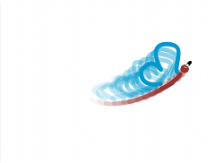

|
 |
Fig. 48 Engadindo un novo fotograma
Engadindo novos fotogramas
Con noso primeiro fotograma rematado, é o momento de engadir o seguinte. Para facelo, imos empregar a Táboa de exposicións, situada á dereita da nosa Área de traballo; co cursor do rato imos premer na posición num. 2 da capa num. 1, tal e como se ve na imaxe:
|
|
Fig. 48 Engadindo un novo fotograma
Cada vez que necesitemos un novo fotograma para traballar, seguimos o mesmo procedemento. É o momento de engadir a nosa bolboreta nunha nova posición, mais antes, deberemos activar a opción de Papel cebola un fotograma cara atrás:
 |
 |
Fig. 49 Activando o papel cebola
Grazas a este recurso, imos poder utilizar os fotogramas anteriores como guía para saber onde debemos situar os obxectos ou personaxes que estamos animando. Notaches que antes de activar o Papel cebola, o fotograma num. 2 era totalmente branco? pois ben, agora vese como se for papel transparente:

Fig. 50 Primeiro fotograma reflectido no segundo, grazas ao papel cebola
Baseándonos na información do primeiro fotograma, debuxamos de novo a bolboreta, esta vez, un chisco máis adiante:

Fig. 51 Debuxando a bolboreta no segundo fotograma
Ben, agora engadimos un terceiro fotograma, mais, para ter unha mellor idea sobre como ir debuxando o noso personaxe a medida que a animación avanza, tamén imos a activar a visibilidade de máis fotogramas cara atrás (10 para este exemplo) no noso cadro de control do Papel cebola:
 |
 |
Fig. 52 Engadindo un fotograma máis e 10 capas de cebola cara atrás
Consello: Lembra que podes activar a transparencia de fotogramas tanto cara adiante como cara atrás. Es libre de usar tantos como compran, o importante é que aproveites esta funcionalidade para facer que as túas animacións se vexan tan fluídas como for posíbel.
Sigamos agora co noso terceiro fotograma, seguindo exactamente os mesmos pasos que xa demos anteriormente:
Fig. 53 Debuxando a bolboreta no fotograma num. 3
Neste punto, é moi probábel que che fagas unha preguntes: Cantos fotogramas vai precisar a miña animación? Bo, é unha moi boa pregunta que aprenderás a responder ti mesmo, co tempo e con moita moita práctica. Só coa experiencia, aprenderás a calcular un valor aproximado de fotogramas para cada un dos teus proxectos. Polo de agora, debuxaremos tantos como sexa preciso para cumprir co proposto no noso guión:

Fig. 54 Debuxando a bolboreta no fotograma num. 6
Fig. 55. Debuxando a bolboreta no fotograma num. 9
 |
 |
 |
 |
Fig # 56. Vista dos fotogramas num. 21, 31, 45 e 46
Consello: Para este pequeno proxecto foi necesario debuxar 73 fotogramas.
Algo importante a ter en conta, é que non debes agardar a debuxar o último fotograma para poder ver como está a quedar a túa animación. De feito, é un bo costume revisar o resultado cada certo número de fotogramas, para así, garantir que as ilustracións que estás plasmando a cada instante, correspondan realmente ao que tes nos miolos. Botémoslle unha ollada!